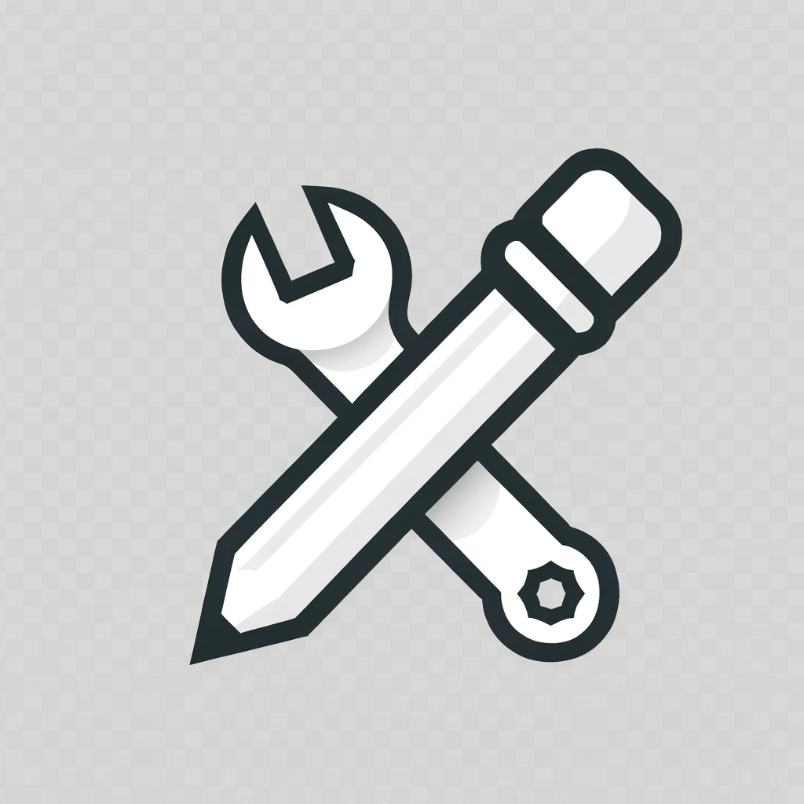

A Technical Writer's Tech Blog
특정 영단어만 인라인 포맷팅하기
Initializing search
블로거 소개
개발 프로젝트
A Technical Writer's Tech Blog
블로거 소개
개발 프로젝트
개발 프로젝트
문서 엔지니어링(Wordpress/HTML)
문서 엔지니어링(Wordpress/HTML)
깨진 링크 찾기
국문 콘텐츠에서 영단어 추출하기
특정 영단어만 인라인 포맷팅하기
실생활 도구
실생활 도구
축의금 정산 도우미
특정 영단어만 인라인 포맷팅하기
TBD
Comments